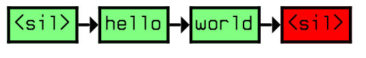

public class JSGFGrammar extends Grammar
#JSGF V1.0 public <helloWorld> = Hello World;Figure 1: Hello grammar that generates the sentences "Hello World". The above grammar is saved in a file called "hello.gram". It defines a public grammar rule called "helloWorld". In order for this grammar rule to be publicly accessible, we must be declared it "public". Non-public grammar rules are not visible outside of the grammar file. The location of the grammar file(s) is(are) defined by the
baseGrammarURLproperty. Since all JSGF grammar
files end with ".gram", it will automatically search all such files at the
given URL for the grammar. The name of the grammar to search for is specified
by grammarName. In this example, the grammar name
is "helloWorld".
#JSGF V1.0 public <basicCmd> = <startPolite> <command> <endPolite>; <command> = <action> <object>; <action> = /10/ open |/2/ close |/1/ delete |/1/ move; <object> = [the | a] (window | file | menu); <startPolite> = (please | kindly | could you | oh mighty computer) *; <endPolite> = [ please | thanks | thank you ];Figure 2: Command grammar that generates simple control commands. The features of JSGF that are shown in this example includes:
"<sil>" means "silence".
 #JSGF V1.0 grammar jsgf.nastygram; public <nasty> = I saw a ((cat* | dog* | mouse*)+)+;the production: ((cat* | dog* | mouse*)+)+ can result in a continuous loop, since (cat* | dog* | mouse*) can represent no speech (i.e. zero cats, dogs and mice), this is equivalent to ()+. To avoid this problem, the grammar writer should ensure that there are no rules that could possibly match no speech within a plus operator or kleene star operator.
| Modifier and Type | Field and Description |
|---|---|
protected URL |
baseURL |
protected GrammarNode |
firstNode |
protected boolean |
loadGrammar |
protected Logger |
logger |
protected JSGFRuleGrammarManager |
manager |
static String |
PROP_BASE_GRAMMAR_URL
The property that defines the location of the JSGF grammar file.
|
static String |
PROP_GRAMMAR_NAME
The property that defines the location of the JSGF grammar file.
|
protected edu.cmu.sphinx.jsgf.JSGFGrammar.RuleStack |
ruleStack |
dictionary, initialNode, PROP_ADD_FILLER_WORDS, PROP_ADD_SIL_WORDS, PROP_DICTIONARY, PROP_OPTIMIZE_GRAMMAR, PROP_SHOW_GRAMMAR| Constructor and Description |
|---|
JSGFGrammar() |
JSGFGrammar(String location,
String grammarName,
boolean showGrammar,
boolean optimizeGrammar,
boolean addSilenceWords,
boolean addFillerWords,
Dictionary dictionary) |
JSGFGrammar(URL baseURL,
String grammarName,
boolean showGrammar,
boolean optimizeGrammar,
boolean addSilenceWords,
boolean addFillerWords,
Dictionary dictionary) |
| Modifier and Type | Method and Description |
|---|---|
void |
commitChanges()
Commit changes to all loaded grammars and all changes of grammar since
the last commitChange
|
protected GrammarNode |
createGrammar()
Creates the grammar.
|
protected void |
dumpGrammar()
Dumps interesting things about this grammar
|
JSGFRuleGrammarManager |
getGrammarManager()
Returns manager used to load grammars
|
String |
getGrammarName()
Returns the name of this grammar.
|
GrammarNode |
getInitialNode()
Returns the initial node for the grammar
|
JSGFRuleGrammar |
getRuleGrammar()
Returns the RuleGrammar of this JSGFGrammar.
|
void |
loadJSGF(String grammarName)
The JSGF grammar specified by grammarName will be loaded from the base
url (tossing out any previously loaded grammars)
|
void |
newProperties(PropertySheet ps)
This method is called when this configurable component needs to be reconfigured.
|
protected edu.cmu.sphinx.jsgf.JSGFGrammar.GrammarGraph |
processRule(JSGFRule rule)
Parses the given Rule into a network of GrammarNodes.
|
void |
setBaseURL(URL url)
Sets the URL context of the JSGF grammars.
|
allocate, createGrammar, createGrammarNode, createGrammarNode, createGrammarNode, createGrammarNode, createGrammarNode, deallocate, dumpGrammar, dumpRandomSentences, dumpRandomSentences, dumpStatistics, getDictionary, getGrammarNodes, getNumNodes, getRandomSentence, newGrammar, postProcessGrammar@S4String public static final String PROP_BASE_GRAMMAR_URL
@S4String(defaultValue="default.gram") public static final String PROP_GRAMMAR_NAME
protected JSGFRuleGrammarManager manager
protected edu.cmu.sphinx.jsgf.JSGFGrammar.RuleStack ruleStack
protected URL baseURL
protected boolean loadGrammar
protected GrammarNode firstNode
protected Logger logger
public JSGFGrammar(String location, String grammarName, boolean showGrammar, boolean optimizeGrammar, boolean addSilenceWords, boolean addFillerWords, Dictionary dictionary) throws MalformedURLException, ClassNotFoundException
public JSGFGrammar(URL baseURL, String grammarName, boolean showGrammar, boolean optimizeGrammar, boolean addSilenceWords, boolean addFillerWords, Dictionary dictionary)
public JSGFGrammar()
public void newProperties(PropertySheet ps) throws PropertyException
ConfigurablenewProperties in interface ConfigurablenewProperties in class Grammarps - a property sheet holding the new dataPropertyException - if there is a problem with the properties.public JSGFRuleGrammar getRuleGrammar()
public JSGFRuleGrammarManager getGrammarManager()
public void setBaseURL(URL url)
url - the URL context of the grammarspublic String getGrammarName()
public void loadJSGF(String grammarName) throws IOException, JSGFGrammarParseException, JSGFGrammarException
grammarName - the name of the grammarIOException - if an error occurs while loading or compiling the grammarJSGFGrammarExceptionJSGFGrammarParseExceptionprotected GrammarNode createGrammar() throws IOException
createGrammar in class GrammarIOException - if the grammar could not be loadedpublic GrammarNode getInitialNode()
getInitialNode in interface GrammarInterfacegetInitialNode in class Grammarprotected edu.cmu.sphinx.jsgf.JSGFGrammar.GrammarGraph processRule(JSGFRule rule) throws JSGFGrammarException
rule - the Rule to parseJSGFGrammarExceptionpublic void commitChanges()
throws IOException,
JSGFGrammarParseException,
JSGFGrammarException
protected void dumpGrammar()
Copyright © 2014. All rights reserved.